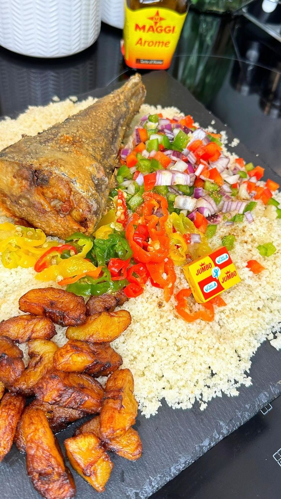
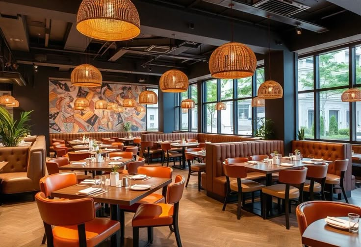
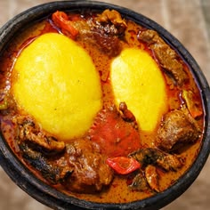

Attiéké-poisson
L’attiéké accompagne un poisson savoureux dans ce grand classique convivial.
La Côte d’Ivoire dans votre assiette
Bienvenue chez Saveurs d’Ivoire, une adresse fictive où les recettes généreuses et les bons moments se partagent autour de la table.

Bienvenue à notre table
Des produits soigneusement choisis, des plats inspirés de nos traditions et une ambiance accueillante : Saveurs d’Ivoire célèbre le plaisir simple de bien manger ensemble.
Nos incontournables
Trois classiques à retrouver à notre table.

L’attiéké accompagne un poisson savoureux dans ce grand classique convivial.

Des bananes plantain dorées, servies avec du poulet pour un plat généreux.

Une sauce parfumée et un foutou fondant, pour retrouver le goût du partage.